Chapter 3 · Part 1 — Where Is Here?
out the .
down at the in the .
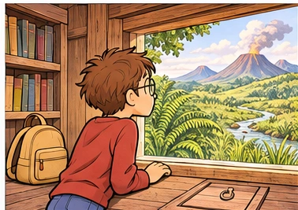
out the .
The world the world in the — were exactly the same.
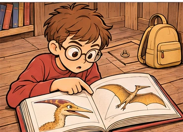
The was through the sky. The was covered with ferns tall grass. was a winding stream. A sloping hill. volcanoes in the distance.

“Wh- are ?” stammered .
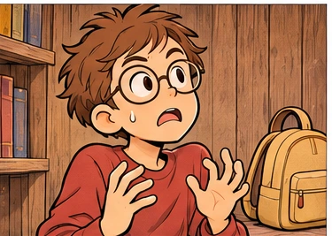
The glided down to the base of their . The coasted to a stop. stood very .

“What happened to ?” . She at . at her.
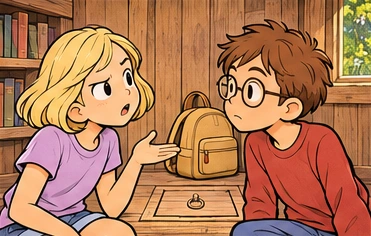
“I don’t know,” . “I was looking at the in the —”
“ , ‘Wow, I I could see a for real,’ ” .

“Yeah. then saw one. In the Frog Creek ,” .

“Yeah. then the wind got loud. the started spinning,” .
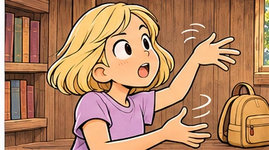
“ landed here,” .
“ landed here,” .

“So … ” .
“So … what?” .
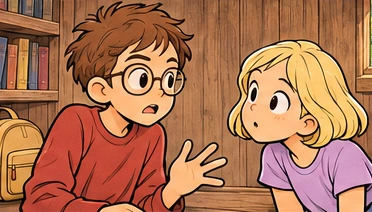
“Nothing,” . shook his head. “None of can be real.”
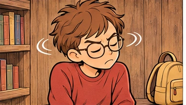
out the again. “But ’s real,” she . “’s very real.”

out the with her. The was standing at the base of the oak . Like a guard. His giant wings were spread out on either side of him.

“Hi!” .
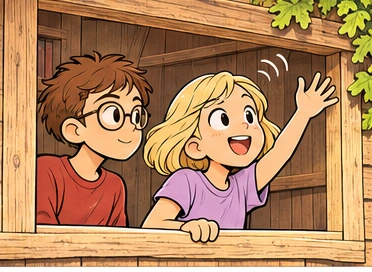
“Shush!” . “’re not supposed to be here.”
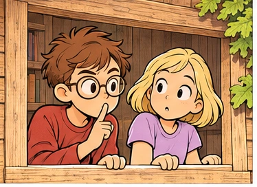
“But is here?” .

“I don’t know,” .
“Hi!” called again to the .
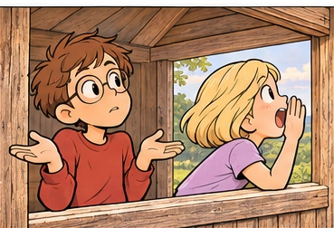
The at them.
“ is here?” called down.

“’re nuts. can’t talk,” . “But maybe the can tell .”
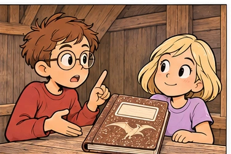
down at the . read the words under the :
flying reptile lived in the Cretaceous period. 65 million years ago.
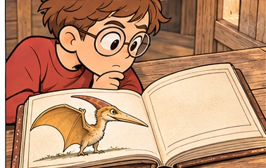
. Impossible. couldn’t have landed in a time 65 million years ago.

“,” . “’s nice.”

“Nice?”
“Yeah, I can tell. Let’s down talk to him.”

“Talk to him?”
started down the .

“Hey!” .
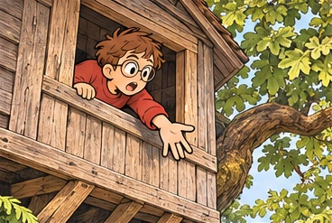
But kept going.
“Are crazy?” called.
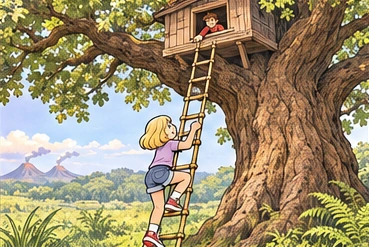
dropped to the . She stepped up to the .